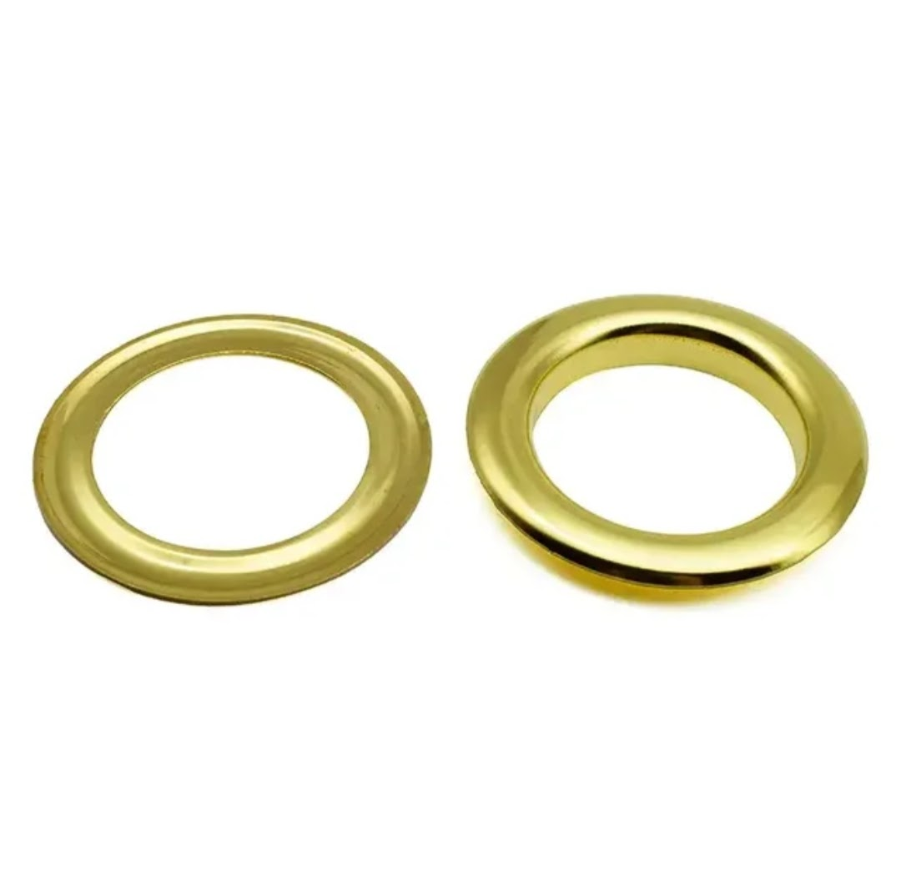
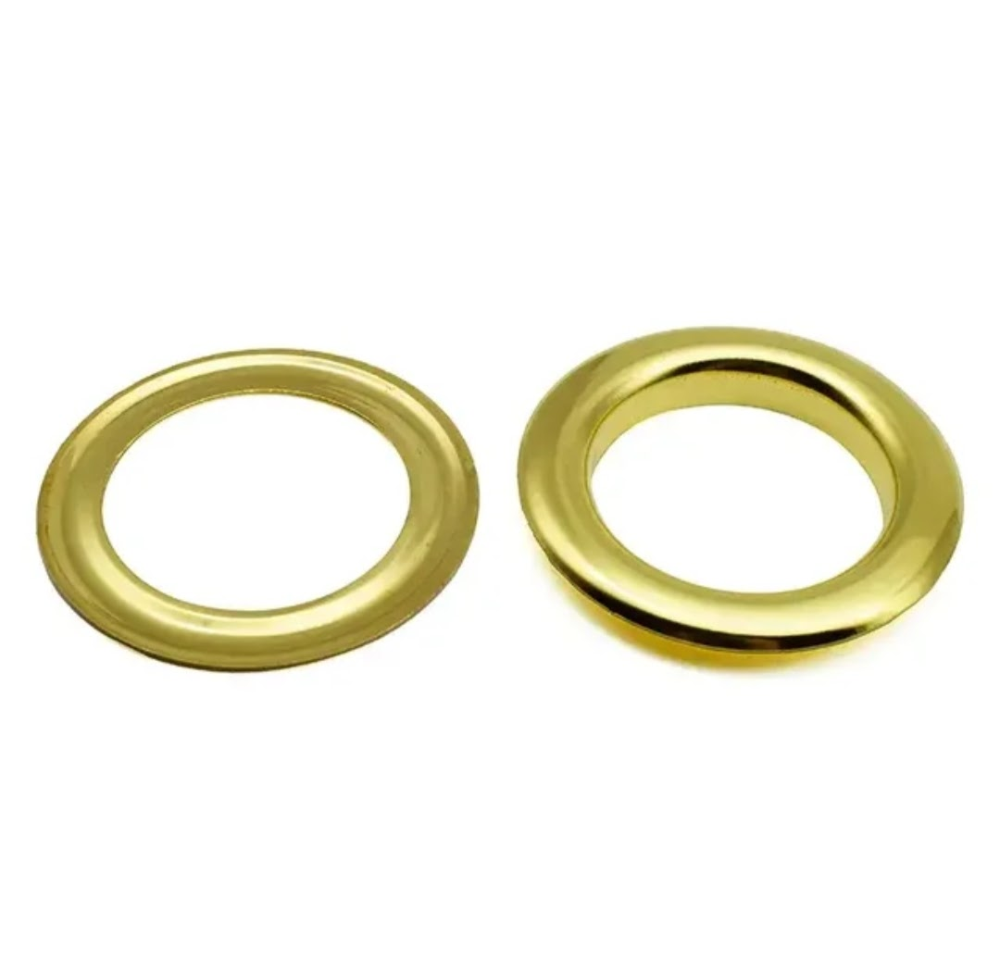

Product Overview
Tarpaulin Eyelets & Grommets are used to reinforce holes and
create strong anchoring points in tarpaulins, covers, tents,
banners, and other heavy-duty fabrics.
Manufactured using high-quality metal materials, these grommets
help prevent tearing, improve load distribution, and ensure
long-lasting performance in outdoor and industrial conditions.
Key Features
- Provides strong and secure fastening points
- Prevents tearing and fabric damage
- Corrosion and weather resistant
- Suitable for indoor and outdoor applications
- Compatible with various fabric types
Specifications
- Material: Aluminium / Brass / Coated Metal
- Sizes: #28, #30, #32 (varies by application)
- Finish: Natural, plated, or coated
- Usage: Heavy-duty fabric reinforcement
- Packaging: Bulk packaging available
Applications & Use Cases
- Tarpaulins and truck covers
- Tents, awnings, and canopies
- Banners and signage
- Industrial and agricultural covers
- Marine and outdoor fabric applications
Best Suited For
- Tarpaulin manufacturers and repair units
- Truck operators and transport fabricators
- Outdoor covers exposed to wind and load stress
Selection Note
For Indian conditions, eyelet size should be selected based on
tarpaulin thickness and load. Proper spacing and secure fixing
using a hand press machine significantly improves holding strength
and prevents fabric tearing.
Commonly Used Along With
- Eyelet Hand Press Machine
- Tarpaulin Sheets and Covers
- Ropes or Lashing Belts for tying
Product FAQs
-
Which eyelet size should be selected for tarpaulin covers?
Eyelet size depends on tarpaulin thickness and load. Heavier covers
typically require larger eyelets to distribute stress evenly.
-
Are aluminium eyelets suitable for outdoor Indian conditions?
Yes. Aluminium eyelets offer good corrosion resistance and are widely
used for outdoor tarpaulins and covers in Indian weather conditions.
-
How far apart should eyelets be installed?
Eyelet spacing depends on wind load and application. Closer spacing
is recommended for truck covers and high-wind outdoor installations.
-
Can these eyelets be fixed manually?
Yes. Eyelets can be fixed using a hand press machine with the correct
die size to ensure proper alignment and secure fastening.
-
Do eyelets prevent tarpaulin tearing?
Yes. Properly installed eyelets reinforce holes and distribute load,
significantly reducing tearing around tie points.
-
Are bulk quantities available for manufacturers?
Yes. Eyelets and grommets are available in bulk packaging for
tarpaulin manufacturers and large-volume users.
 
